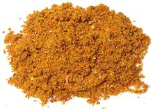

 |
Madras Curry Powder #1Anglo-Indian | ||||
| Madras curry powder is essential for British and American recipes calling for "curry powder" but is not authentic for Indian recipes. It is, also used in Africa, in regions formerly under British colonial rule. See Comments. | |||||
|
|
1 1-1/2 2 1 18 1/2 1-1/2 1/2 3 3/4 1-1/2 |
T T t T t in T t T |
Cumin seeds Coriander seeds Fennel seeds Red Chili flake (2) Cloves, whole Fenugreek seeds Cinnamon stick Peppercorns black Bay Leaves, dry Ginger, ground Turmeric, ground |
Make - (15 min)
|